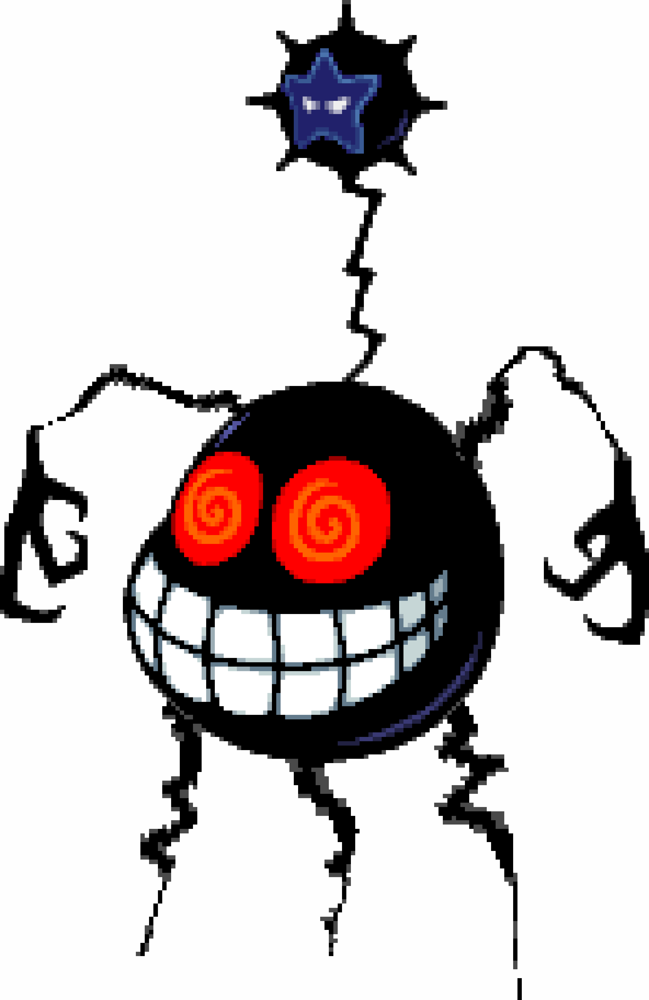

Dark Form


Fawful also at one point gains a dark form. This happens when he has absorbed some of the Dark Stars power (more about this in
Goal & Motivation tab). The form of his to the left is more of a difference in looks rather than powers in comparison to the normal
form. The reason for him hardly getting any new powers is because he only go half of the power from the Dark Star. The form on the
righ however which looks more like a bug is when has enfused with all of the dark power. This gives him a lot of new attacks and makes
him way more of a formiddable foe. This is what he waited half a decade to achieve.